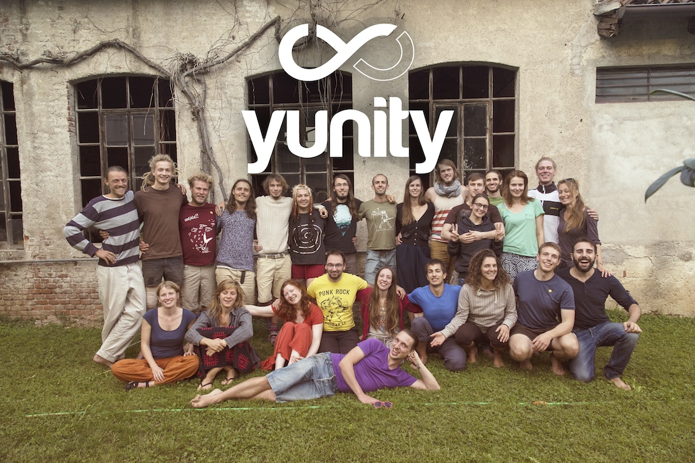
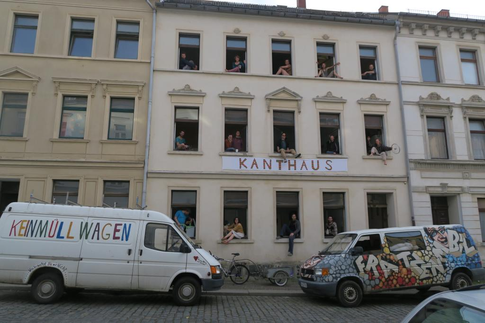
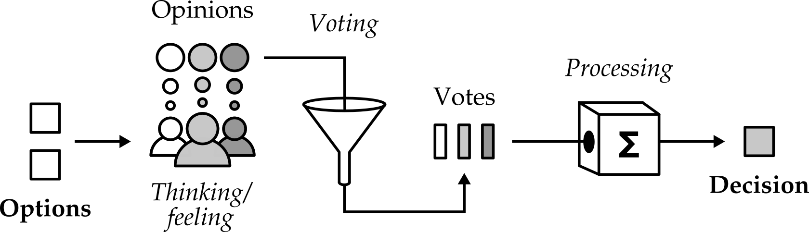
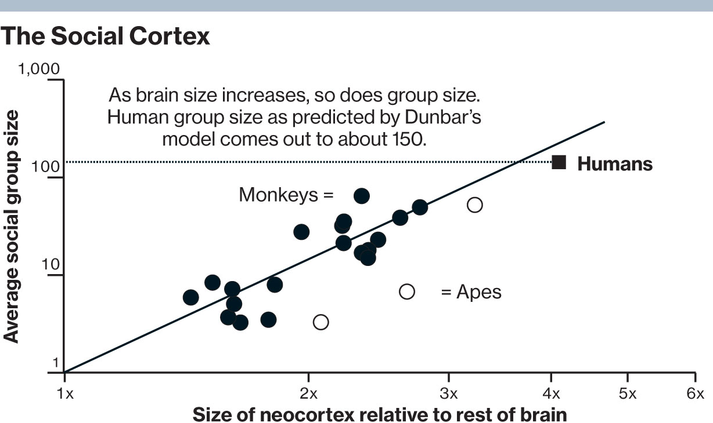
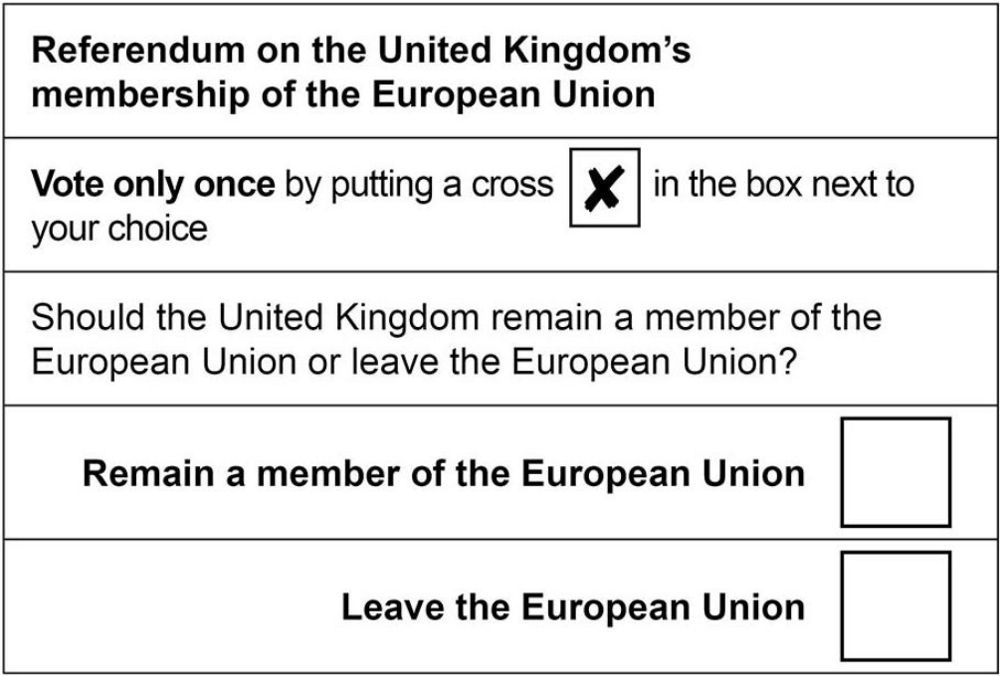
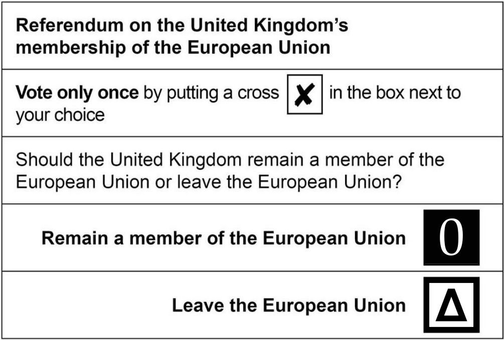
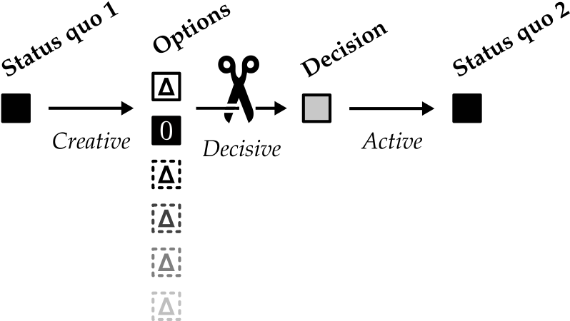
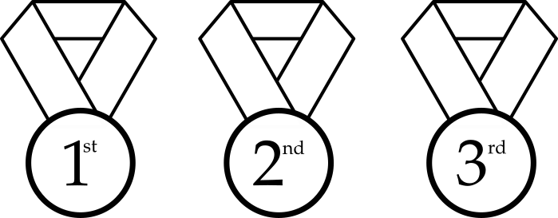
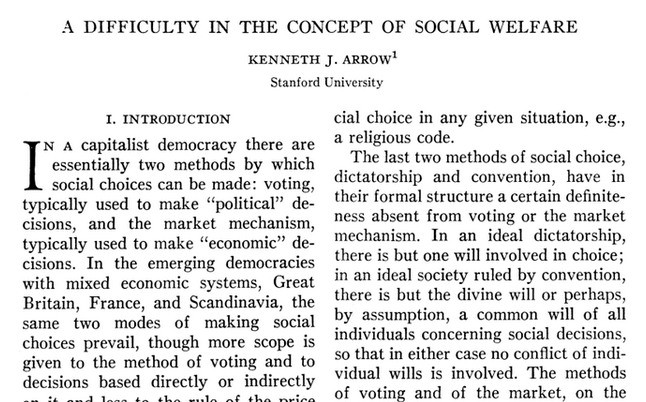
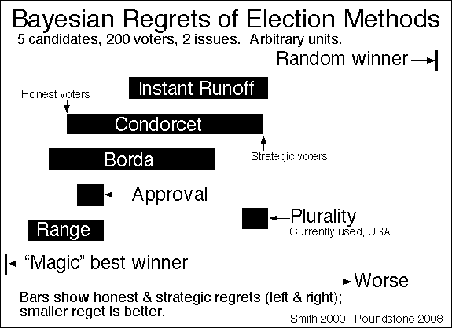

class: center, middle # Post-consensus, cooperative decision-making Doug Webb | Last updated: 2018-08-16 | [pdf](poco_coop_dm.pdf) --- ## Post-consensus, cooperative decision-making - **Why** it's important - **What** it is precisely - **How** it can be done --- ## About me - spent ~ 18 months with a sharing focused software project - nomadic, living almost without money - now a [project network](https://yunity.org/en)  --- ## About me - spent last year building a common house coop - built in what I'd learned previously - it's called [Kanthaus](https://kanthaus.online)  --- class: center, middle # Why --- ## The race for cooperation Growing movement towards cooperation... - permaculture, commons, coops - lean, agile, scrum, teal, sociocracy, - activists, collectives, grassroots groups -- ...response to global problems... - ecological resource destruction - global warming - excessive inequality -- ...many of which are symptoms of - hierarchies - majority-rule - 'capitalism' -- Critical question for alternatives: - **how do we make decisions?** --- ## Collective decision-making **Cooperatives.** Associations with legally enshrined member equality. Principle 2 of 7: > _"2. Democratic Member Control. ... members have equal voting rights (one member, one vote) ..."_ > —[ICA Co-operative Principles](https://www.ica.coop/en/whats-co-op/co-operative-identity-values-principles) **Commons.** Associations formed around the sustainable use of a resource. The 3rd of 8 features exhibited by long-standing commons: > _"3. Collective-choice arrangements. Most individuals affected by the operational rules can participate in modifying the operational rules."_ > —Elinor Ostrom, [Governing the Commons](http://wtf.tw/ref/ostrom_1990.pdf) --- ## Consensus .center[ <video width=100% controls> <source src="https://www.seedsforchange.org.uk/videos/SeedsForChange1-WhatConsensus.mp4"> </video> ] --- ## Consensus framework > _Step 1: Introduce and clarify the issue(s) to be decided_ ... > _Step 2: Explore the issue and look for ideas_ ... > _Step 3: Look for emerging proposals_ ... > _Step 4: Discuss, clarify and amend your proposal_ ... > _Step 5: Test for agreement ... _**Consensus: No blocks, not too many stand asides or reservations? Active agreement? Then we have a decision!** [else back to Step 3] > _Step 6: Implement the decision_ ... > —Seeds for Change, [Consensus Flowchart](https://www.seedsforchange.org.uk/consflow.pdf) (emphasis added) - most of consensus isn't deciding! - --- ## Consensus: recent history - 1920: US women no longer excluded from voting - _depression, war, growing ecological crises_ - 1960: anti-nuclear activists wish to organize: - without hierarchy - without 'structurelessness' (-> hierarchy) - without majority voting - ... Quakers suggest consensus - 1960+: consensus normalised within activisism, coops, communities... - 2013: occupy heavily promotes consensus --- ## Consensus: When it is good - **Deep listening** - _often a first time for participants, therapeutic_ - **Promotes the understanding of others** - _encourages the confrontation of awkward topics_ - **Ethic of care** - _trying to find something everyone can accept_ - **Social function** - _meetings are a regular, social interaction) - **Creative** - _dialogue brings up novel ideas_ -- <br> .center[ >> _'When it is good,_ >> _It is very good indeed,_ > _But when it is bad it is horrid'_ ] --- ## Consensus: When it is bad - **Take ages** - _survival of the fittest, burnout, frustration_ - **Conceals hierarchy** - _charisma, eloquence, appeal, race, sex_ - **Reduces group intelligence** - _anchoring, groupthink, pluralistic ignorance_ - **Conservative dictators** - _sociopaths can keep things the way they are_ - **Philosophical crises when unachievable** - _"we're not cooperative any more"_ -- <br> _These disadvantages are mostly due to process, not participants!_ --- ## Consensus: casualties **Historical** - Collapse of [Polish–Lithuanian Commonwealth](https://en.wikipedia.org/wiki/Liberum_veto) ~1650-1750 -- **Recent** - Progress stifled in [Anti-nuclear movement](https://libcom.org/files/consensus.pdf) ~1970-1980 - Unsustainable latency in [Occupy](http://occupywallst.org/article/occupiers-stop-using-consensus/) ~2013 -- **Present** - many users I've talked to - _"meetings go on for so long, I've stopped attending"_ - _"only the confident block, the power imbalance remains"_ - _"one person kept blocking: gradually everyone left"_ - ... --- class: center, middle ## Why: summary - movement towards cooperation - decision-making is critical - consensus not always cooperative - cooperative alternative to consensus required --- class: center, middle # What --- ## Decision-making: as selection We often think of deciding as selecting... --- ## Decision-making: as cutting ... but it's clearer to think of it as eliminating. > _"decide (v.) ... from Latin_ decidere ... _literally_ **"to cut off"**" > —[Online Etymology Dictionary](https://www.etymonline.com/word/decide) --- ## Decision-making: in detail A basic model for the sub-processes during collective decision-making  1. forming opinions (_outwith process scope_) 2. compressing opinions (a.k.a. voting (_yes, there is voting in consensus_)) 3. combining opinions --- ## Decision-making: in context Antecedes option creation, precedes decision implementation. --- ## Post-consensus Failure to reach consensus, often due to group being... -- - too diverse - perception - ethics, norms, culture -- - too dynamic - people coming and leaving - people not wanting to spend time -- - too big - numbers - distributed in space -- <br> _However diversity, dynamism and scale are often desirable!_ --- ## Small, stable, similar groups: consensus possible **Scrum teams** > _"Having more than _**nine**_ members requires too much coordination. Large Development Teams generate too much complexity for an empirical process to be useful."_ > —[The Scrum Guide™](http://www.scrumguides.org/scrum-guide.html) **Affinity groups** > _"The size of an affinity group can range from _**two to, say, fifteen**_ ... no group should be so numerous that an informal conversation about pressing matters is impossible."_ > —[Destructables tutorial](http://destructables.org/node/54) **Bible study groups** > _"the ideal size of a small group is _**six to fifteen**_ people."_ > —[Small Group Churches article](http://www.smallgroupchurches.com/the-ideal-small-group-size/) --- ## Dunbar's estimate Study on front-brain vs group size suggests a cognitive limit to social relations > --> limit to shared perception >> --> limit on consensus.  --- ## Cooperation - subjective: no fixed definition - philosophy of consensus seems to be: - "one for all, all for one" - "acceptable for everyone" - what about philosophy of cooperation? -- I'm putting forward a philosophy of cooperation based on 3 values: - autonomy - equivalence - mutual-interest --- ## Cooperation: autonomy a.k.a. **Freedom, self-determination, _Liberté_** Regarding decision-making: - people determine outcome (vs. chance, lottery) - people can participate honestly (i.e. don't have to lie) --- ## Cooperation: equivalence a.k.a. **Equality of worth, _Égalité_** Regarding decision-making: - _'one person, one vote'_ - vs. one-£-one vote, dictatorship, racism, etc --- ## Cooperation: mutual-interest a.k.a. **Care for others, mutual-aid, _Fraternité_** <img src="img/mutualInterest.png" width=50%> Regarding decision-making: - **?** --- ## _Utilitarianism_ > _"... it is the greatest happiness of the greatest number that is the measure of right and wrong."_ > —Jeremy Bentham, 1776. _A fragment on Government_ - increasing happiness = reducing suffering - would you give a cake to: - starving person (reduce suffering) - person who just ate dinner (increase happiness) --- ## _Asymmetric utilitarianism_ > _"... the promotion of happiness is in any case much less urgent than the rendering of help to those who suffer, and the attempt to prevent suffering."_ > —Karl Popper, 1945. _The Open Society and Its Enemies_ - increasing happiness < reducing suffering - would you give a cake to: - **starving person** - ~~person who just ate dinner~~ --- ## Cooperation: mutual-interest a.k.a. **Care for others, mutual-aid, _Fraternité_** <img src="img/mutualInterest.png" width=55%> Regarding decision-making: - select the **most acceptable, achievable option** - vs. majority preference --- class: center, middle # What: summary **Decision-making:** - selecting by cutting **Post-consensus:** - failure to reach consensus - too big, diverse or dynamic for consensus **Cooperative:** - autonomous, equivalent and mutually-interested - most acceptable, achievable option --- class: center, middle # How --- ## Decision-making in detail Examination of how each element can support cooperation. 1. options 2. voting 3. combining --- ## Options: you need at least two Otherwise there is nothing to 'decide' on. --- ## Options: something or nothing One option must be to _change something_ (a specific proposal, 𝝙). There is always the option to _change nothing_ (the current status quo, 0). _(The counter-proposal in consensus is what happens if proposal fails, usually further discussion.)_ --- ## Options: wait, binary is bad You probably want _more_ than two.  --- ## Options: wait, binary is bad You probably want _more_ than two.  - Vague proposals lead to conflict if selected - Specific proposals are polarizing --- ## Options: more, but not too many Having more options increases the likelihood of acceptable option for all...  ...and participant overload. --- ## Options: revote on other options Having _"Revote on other options"_ ensures an acceptable option for all without overloading. Should outline: - arrangements for adding new options, and - arrangements for next vote --- ## Voting: independent, not secret In rock-paper-scissors the play is independent, not secret. -- - independent voting forces people to think for themselves - avoids [anchoring](https://en.wikipedia.org/wiki/Anchoring) (first person influences rest) - avoids [groupthink](https://en.wikipedia.org/wiki/Groupthink) (desire for harmony over-rides honesty) - avoids [pluralistic ignorance](https://en.wikipedia.org/wiki/Pluralistic_ignorance) (falsely assumed norms) -- - cooperative groups need not vote in secret (most cases) - encourages people to address issues - reveals the people likely to do the work (_N.b. It's possible to use voting within consensus simply to combat biases._) --- ## Voting type: majority Vote for favorite. - problems: vote splitting, wasted votes, lesser evil, etc. - can't express positive/negative opinion --- ## Voting type: ranking Rank options best to worst.  Better than majority, but... --- ## Voting type: ranking Unavoidable paradoxes and manipulation strategies present whenever there are more than 3 options, as shown by [Arrows Impossibility Theorem](https://en.wikipedia.org/wiki/Arrow%27s_impossibility_theorem) then [Gibbard-Satterthwaite Theorem](https://en.wikipedia.org/wiki/Gibbard%E2%80%93Satterthwaite_theorem).  - and participants _still_ can't express positive/negative opinion ??? No ranked system satisfies the following criteria - If everyone prefers X over Y, the group prefers X over Y - If everyones preference of X to Y remains unchanged, the groups preference of X to Y remains unchanged despite changes to other preferences (e.g. X to Z, Y to Z, etc.) - There is no 'dictator', a single voter with the power/knowledge to determine the groups preference --- ## Voting type: scoring Give each option a rating. - numeric representation: 1, 2, 3, 4, 5 - can (ambiguously) express positive/negative opinion --- ## Voting type: scoring Give each option a rating. - numeric representation: -2, -1, 0, 1, 2 - can unambiguously express positive/negative opinion - scoring range 'breaks down' after 11 points (i.e. -5 to +5) _(Consensus essentially allows you to score, but just the proposal.)_ --- ## Combining: addition is OK Simulation shows scoring results in best utility outcome, even with non-cooperative participants. (Note: 'Range' = 'Score')  --- ## Combining: re mutual-interest However, direct addition equates positive and negative scores... - e.g. _'negative two'_ plus _'two'_ equals zero --- ## Combining: negative score multiplication Multiplying negative scores elevates acceptable over preferable. (e.g. "multiply negative scores by 3 before totalling") - greater than 1 - less than ∞ (otherwise not enough motivation to do it) - factor group dependent _(Consensus essentially has a -∞ factor for the veto, again, just for the proposal!)_ --- class: center, middle # How: summary **Options:** - include 'change nothing' as an option - include 'revote on other options' as an option - allow multiple proposals (but not _too_ many) **Voting:** - independent, not secret - score each option - positive/negative range, 3 - 11 points (e.g. -3 to +3) **Combining:** - multiply negative scores before totalling - greater than 1, less than ∞ --- ## Within a decision-making stack Formal procedures take effort! Score voting comes after more fluid methods. **Individual** - subconscious - norms - executive decisions from role-bearers - [doocracy](https://communitywiki.org/wiki/DoOcracy) - [advice process](http://www.reinventingorganizationswiki.com/Decision_Making) >> **Sub-group** - informal - consensus - [consent](https://www.solutionsiq.com/resource/blog-post/consent-for-decision-making-in-agile-organizations/) >>>> **Entire group** - consensus - consent - **weighted score voting with control options** --- ## Examples in the wild ### kanthaus constitution Decision-making procedure outlined which includes all features described above - free, cc0 - in use for over a year... still prototype https://kanthaus.online/en/governance/constitution -- ### ukuvota Simple web-app with all features described above - free, open-source - prototype! Not safe for critical info https://ukuvota.world/ --- ## Let's cooperate **I need:** - critical feedback - couches to crash on - contact to other governance hackers - advice on CSR and Effective Altruism - cash **I can give:** - talks, workshops, consultation - other organizational topics - advice on financial hyper-minimalism - a place to stay in Germany _What do you need? What can you give?_ --- ## Thanks for listening/reading! **License: [cc0](https://creativecommons.org/publicdomain/zero/1.0/)** - please use my work*; use it as you please - don't ask for permission - attribution is nice, not necessary - *_not my work: Brexit, Arrows Theorem, Dunbar and Bayesian Regret images; all quoted text._ **Contact: questions, corrections, feedback...** - site: [dougwebb.site](https://dougwebb.site/) ~~[douginamug.gitlab.io](https://douginamug.gitlab.io/)~~ - [@douginamug](https://mastodon.xyz/@douginamug) for Mastodon/ActivityPub, - dm"hotel"webb@gmail.com for email (where "hotel" is a letter) - [@douginamug](https://twitter.com/DougInAMug) on Twitter - 'Doug Webb' on Facebook